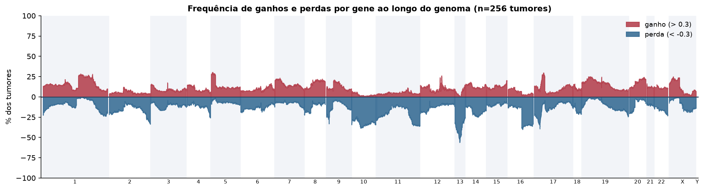
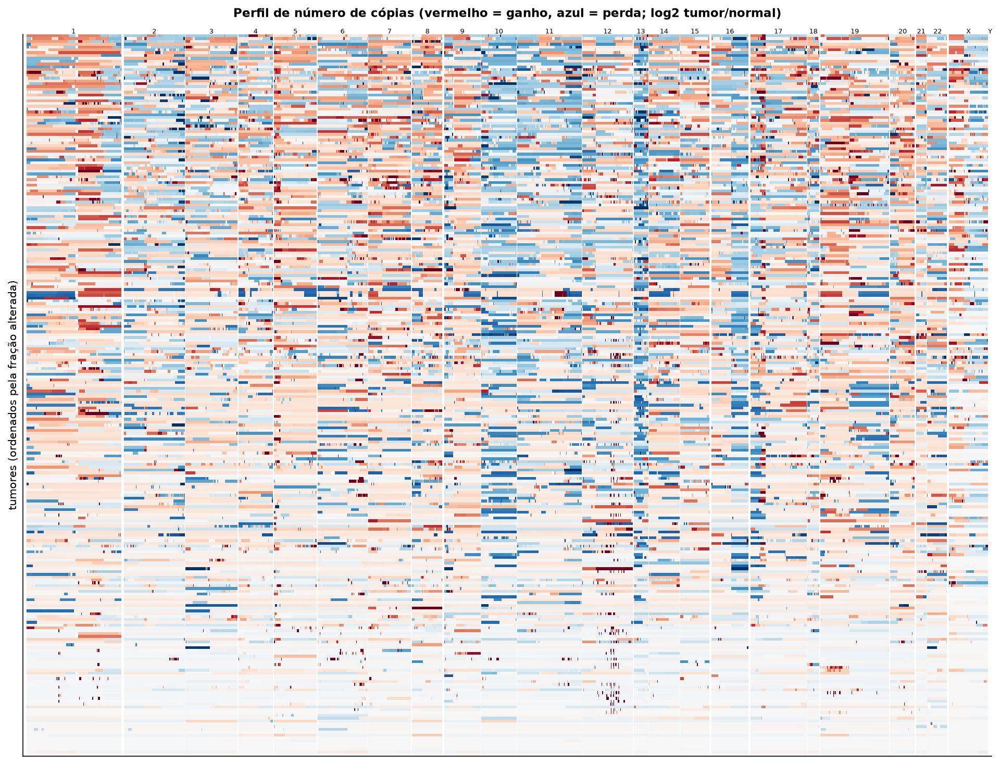
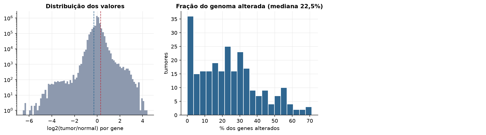
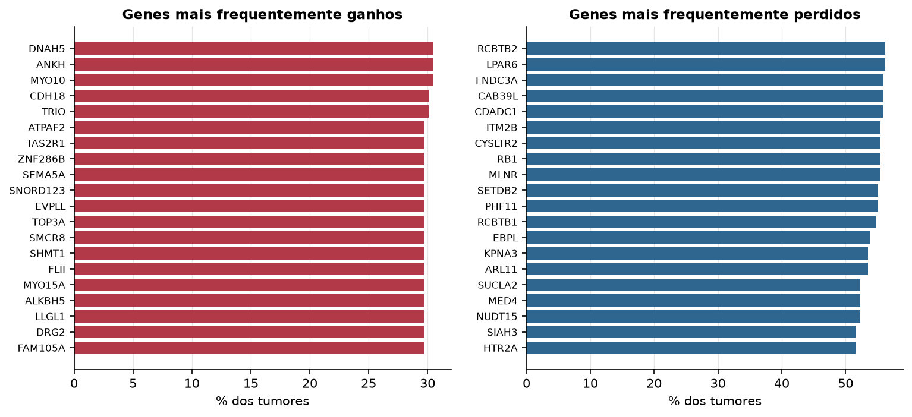

SARC · Número de cópias (CNV)
Affymetrix SNP6, segmentos whitelisted do PanCanAtlas · gerado em 22/10/2026 03:48
256tumores
17.738genes
22,5%fração alterada mediana
250segmentos/tumor (mediana)
Fonte: SNP6 whitelisted (PanCanAtlas); nível de gene calculado dos segmentos (hg19)
O valor por gene é o do segmento que cobre o meio do gene (log2 tumor/normal, hg19). Sem correção de pureza e ploidia: tumores com pouca célula tumoral têm valores atenuados. Para chamadas discretas (−2 a 2), use o GISTIC2 do PanCanAtlas ou o ABSOLUTE.
Principais resultados
- Mediana de 22,5% dos genes com ganho ou perda por tumor (limiares log2 de 0.3 e -0.3).
- O cromossomo com mais ganhos em média é o 20 (16,6% dos tumores por gene) e o com mais perdas é o 13 (39,4%).
- Genes mais ganhos: DNAH5 (30%), ANKH (30%), MYO10 (30%), CDH18 (30%), TRIO (30%), ATPAF2 (30%). Genes mais perdidos: RCBTB2 (56%), LPAR6 (56%), FNDC3A (56%), CAB39L (56%), CDADC1 (56%), ITM2B (55%).
Paisagem ao longo do genoma


Carga de alterações

Genes recorrentes

Top 25 genes por frequência de ganho
| gene | chrom | % ganho | % perda | média log2 |
|---|---|---|---|---|
| DNAH5 | 5 | 30.5 | 4.3 | 0.22 |
| ANKH | 5 | 30.5 | 4.3 | 0.211 |
| MYO10 | 5 | 30.5 | 3.9 | 0.214 |
| CDH18 | 5 | 30.1 | 3.9 | 0.211 |
| TRIO | 5 | 30.1 | 3.5 | 0.224 |
| ATPAF2 | 17 | 29.7 | 7.4 | 0.228 |
| TAS2R1 | 5 | 29.7 | 3.9 | 0.209 |
| ZNF286B | 17 | 29.7 | 7.4 | 0.23 |
| SEMA5A | 5 | 29.7 | 3.5 | 0.211 |
| SNORD123 | 5 | 29.7 | 3.9 | 0.207 |
| EVPLL | 17 | 29.7 | 7.4 | 0.228 |
| TOP3A | 17 | 29.7 | 7.8 | 0.225 |
| SMCR8 | 17 | 29.7 | 7.8 | 0.225 |
| SHMT1 | 17 | 29.7 | 7.8 | 0.225 |
| FLII | 17 | 29.7 | 7.8 | 0.223 |
| MYO15A | 17 | 29.7 | 8.2 | 0.224 |
| ALKBH5 | 17 | 29.7 | 8.2 | 0.221 |
| LLGL1 | 17 | 29.7 | 7.8 | 0.223 |
| DRG2 | 17 | 29.7 | 7.8 | 0.227 |
| FAM105A | 5 | 29.7 | 3.9 | 0.208 |
| BASP1 | 5 | 29.7 | 4.3 | 0.211 |
| FAM134B | 5 | 29.7 | 4.3 | 0.204 |
| CDH9 | 5 | 29.7 | 3.9 | 0.19 |
| ROPN1L | 5 | 29.3 | 3.5 | 0.212 |
| LGALS9C | 17 | 29.3 | 7.8 | 0.23 |
Top 25 genes por frequência de perda
| gene | chrom | % ganho | % perda | média log2 |
|---|---|---|---|---|
| RCBTB2 | 13 | 0.4 | 56.2 | -0.639 |
| LPAR6 | 13 | 0.4 | 56.2 | -0.538 |
| FNDC3A | 13 | 0.4 | 55.9 | -0.535 |
| CAB39L | 13 | 0.4 | 55.9 | -0.578 |
| CDADC1 | 13 | 0.4 | 55.9 | -0.523 |
| ITM2B | 13 | 0.4 | 55.5 | -0.485 |
| CYSLTR2 | 13 | 0.4 | 55.5 | -0.592 |
| RB1 | 13 | 0.4 | 55.5 | -0.484 |
| MLNR | 13 | 0.4 | 55.5 | -0.511 |
| SETDB2 | 13 | 0.4 | 55.1 | -0.576 |
| PHF11 | 13 | 0.4 | 55.1 | -0.568 |
| RCBTB1 | 13 | 0.4 | 54.7 | -0.575 |
| EBPL | 13 | 0.4 | 53.9 | -0.545 |
| KPNA3 | 13 | 0.4 | 53.5 | -0.538 |
| ARL11 | 13 | 0.4 | 53.5 | -0.555 |
| SUCLA2 | 13 | 1.6 | 52.3 | -0.337 |
| MED4 | 13 | 1.6 | 52.3 | -0.34 |
| NUDT15 | 13 | 1.6 | 52.3 | -0.34 |
| SIAH3 | 13 | 1.6 | 51.6 | -0.325 |
| HTR2A | 13 | 2 | 51.6 | -0.343 |
| LRCH1 | 13 | 1.6 | 51.6 | -0.336 |
| ESD | 13 | 2 | 51.2 | -0.351 |
| ZC3H13 | 13 | 1.6 | 51.2 | -0.323 |
| COG3 | 13 | 2 | 51.2 | -0.321 |
| CPB2 | 13 | 1.6 | 51.2 | -0.327 |